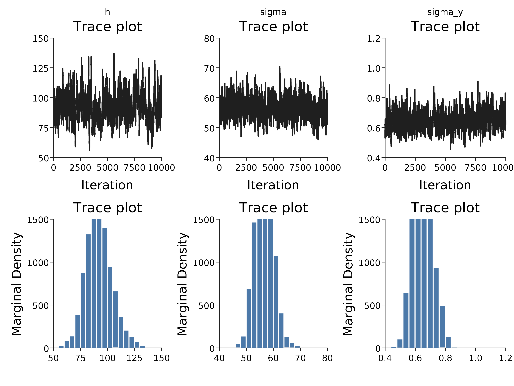
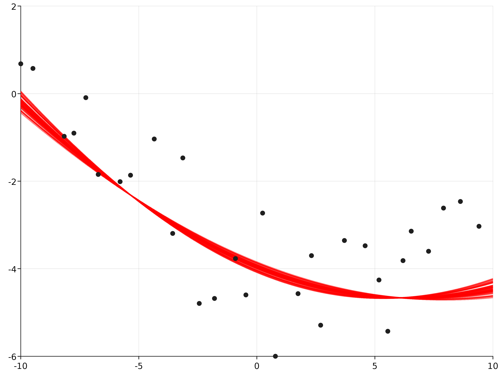

Metropolis-Hastings
The Metropolis-Hastings algorithm can be used to determine the hyper-parameter posterior distribution. This in turn allows us to determine the posterior distribution of the latent function $y = f(x)$. Suppose that the model is defined as in the introduction, with a covariance function consisting of the sum of a white-noise function and a squared exponential and the distance function is euclidean distance.
import com.github.jonnylaw.gp._
val params = GaussianProcess.Parameters(
MeanParameters.zero,
Vector(KernelParameters.se(h = 3.0, sigma = 5.5), KernelParameters.white(sigma
= 1.0))
)
val dist = Location.euclidean _
val xs = GaussianProcess.samplePoints(-10.0, 10.0, 300).map(One.apply)
val ys = GaussianProcess.draw(xs, dist, params)
The hyper-parameters of the squared exponential covariance function are (h) and (\sigma), whereas the only hyper-parameter of the white-noise covariance function is (\sigma_y). In order to determine the posterior distribution of the hyper-parameters, prior distributions for each hyper-parameter must be chosen. Weakly informative prior distributions can be easily selected, but may not provide enough information to properly recover the parameters used in the simulation as they can be highly correleted. The parameters are all strictly positive, so a suitable prior distribution could be the gamma distribution:
The prior is represented as a function from the kernel parameters to a Double:
import breeze.stats.distributions._
val priorSigmaY = Gamma(2, 2)
val priorSigma = Gamma(2, 2)
val priorh = Gamma(2, 2)
def prior(ps: Vector[KernelParameters]) = ps.map(p => p match {
case SquaredExp(h, sigma) =>
priorh.logPdf(h) +
priorSigma.logPdf(sigma)
case White(s) =>
priorSigmaY.logPdf(s)
}).sum
Next the log-density of the prior distributions is combined with the log-likelihood of the Gaussian process:
Where (K_y) is the covariance matrix at observed points, (\psi) represents the hyper-parameters and (\textbf{y}(x)) is a vector containing all the observed data.
Finally a proposal distribution for the static parameters is required, a
symmetric Normal proposal distribution with standard deviation delta which
proposes each of the parameters on the log-scale is selected. The import of
cats.implicits._ is required to get a Traverse instance for Vector, which
allows us to map a monadic function A => Rand[B] over the vector and return
Rand[Vector[B]] instead of Vector[Rand[B]].
import cats.implicits._
def proposal(delta: Double)(ps: Vector[KernelParameters]) = ps traverse {
p => p match {
case SquaredExp(h, s) =>
for {
z1 <- Gaussian(0.0, delta)
newh = h * math.exp(z1)
z2 <- Gaussian(0.0, delta)
newS = s * math.exp(z2)
} yield KernelParameters.se(newh, newS)
case White(s) =>
for {
z <- Gaussian(0.0, delta)
news = s * math.exp(z)
} yield KernelParameters.white(news)
}
}
Now the sample function can be used to determine the covariance function
hyper-parameters given the observed data, observing only every 15th point:
val observed = GaussianProcess.vecToData(ys, xs).
zipWithIndex.
filter { case (_, i) => (i + 1) % 10 == 0 }.
map(_._1)
val step = KernelParameters.sample(observed, dist, prior, proposal(0.05))
val init = params
val iters = MarkovChain(init)(step).
steps.
drop(10000).
take(10000).
toVector
This samples 20000 iterations of a Markov chain, discarding the first 10000 as burn-in. This diagnostics of the this chain can be plotted:
import com.cibo.evilplot.plot.aesthetics.DefaultTheme._
Diagnostics.diagnostics(iters.map { ps => ps.toMap }).
render().
write(new java.io.File("docs/src/main/resources/figures/parameters_weakly_informative_gp.png"))

More informative prior distributions are required to recover the parameters from this data, or more data. In addition the variance of the proposal distribution appears to be too small, since the traceplot reveals poor mixing.
Posterior predictive distribution
The parameter posterior distribution can be used to make draws from the posterior predictive distribution of the latent function, (f(x)).
def discreteUniform(min: Int, max: Int) = new Rand[Int] {
def draw = scala.util.Random.nextInt(max - min) + min
}
val replicates = 50
// uniformly sample indices
val indices = discreteUniform(0, iters.size).
sample(replicates).toVector
// create a regular grid of points to draw from the GP posterior
implicit val integralD = scala.math.Numeric.DoubleAsIfIntegral
val testPoints = Vector.range(-10.0, 10.0, 0.01).map(One(_))
def predict(p: GaussianProcess.Parameters): Vector[(Location[Double], Gaussian)] = {
Predict.fit(testPoints, observed, dist, p)
}
val parameters = indices.toVector.map(i => iters(i))
val res = parameters.map(predict)
The posterior mean of the latent function at each of the p = 50 sampled parameters can be plotted:
com.cibo.evilplot.plot.Overlay(Plot.ppPlot(res), Plot.scatterPlot(observed)).
render().
write(new java.io.File("docs/src/main/resources/figures/posterior_predictive_gp.png"))
